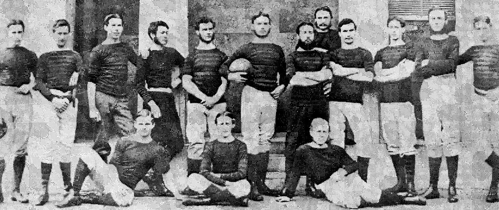

Some notable family members
Charles Burton Barrington (1848-1943)
Charles Burton Barrington succeeded to the family baronetcy in 1890 and became High Sheriff of Limerick. He entered Trinity College Dublin in January 1867, having been educated in St Columba's College, Rathfarnham. He was notable in rugby circles and is credited with modernising the game in Ireland. He was captain of the rugby team for three years from 1867-1870. He also captained the Trinty rowing team at the Philidelphia Exhibition in 1876, with his brother Croker also on the team. In later years, he drove an ambulance in France during World War I at the age of 67. He was also an honorary colonel of the Limerick City Artillery.
Matthew Barrington (1788-1861)
Matthew Barrington, the elsest son of Joseph Barrington (1764-1846), was born in Limerick in May 1788. He moved away from the clock-making business and trained as a solicitor. In 1814, at just 26, he became Crown Solicitor for Munster. That same year he married Charlotte Hartigan, whose dowry consisted a large tract of land in the Barony of Connelloe, County Limerick, as well as £2,000. Sir Matthew died in April 1861, aged 72 years and is buried in the family vault in St Mary's Cathedral in Limerick. His legacy can be seen in Barringtons' Hospital, Sarsfield Bridge, Barrington's Pier, Glenstal and Barrington's Bridge, whose bicentennial was commemorated in 2018.
Winifred Barrington (1898-1921)
Winifred was the only daughter of Charles Burton Barrington. She was killed in a republican attack on her car in 1921, while returning from a day's fishing near Newport in Tipperary. She was just 23-years-old. The intended target was the 26-year-old District Inspector of the Auxiliaries, Henry Biggs, one of the more hated Black and Tan officers in the district, who was travelling in the car with her. After this incident, the Barrington family moved to England and Sir Charles offered Glenstal to the Irish Free State government as an official residence, an offer that was not taken up. During the Great War, Winifred had cooked in a military hospital and did auxiliary work in the air force.

Florence Barrington (1894-1968)
Florence Barrington was the daughter of Croker and grand-daughter of Sir Croker Barrington, 4th Baronet. She attended national school at Barrington's Bridge. During World War I, she volunteered with the Voluntary Ambulance Division in Russia. She worked with the Anglo-Russian Hospital in Ismail in 1916, having travelled there via Petrograd and Odessa, but ended up having to flee the country due to the Bolshevik Revolution of November 1917. She spent her later years at Clonshavoy House, Lisnagry and was the last of the Barrington family to live in County Limerick. She died on November 9, 1968 and is also buried at the family vault in St Mary's Cathedral.